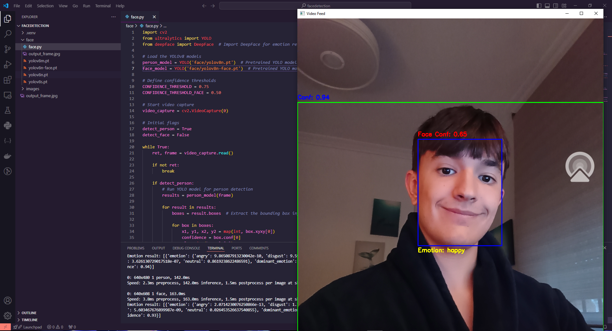

Face Detection
This innovative AI vision project is designed to enhance human-computer interaction by accurately detecting both faces and bodies while also recognizing emotional states. Leveraging advanced computer vision algorithms, the system utilizes cutting-edge techniques for real-time detection and analysis, ensuring high precision and responsiveness.
The face detection component identifies and localizes human faces in various environments, while the body detection feature recognizes full-body poses and movements. Together, these capabilities allow for a comprehensive understanding of human presence and behavior.
In addition to physical detection, the project incorporates emotion recognition, enabling the AI to interpret facial expressions and body language. By analyzing features such as facial movements and posture, the system can identify a range of emotions, including happiness, sadness, anger, and surprise. This emotional intelligence enhances the AI's ability to respond appropriately in interactive applications, making it ideal for fields like customer service, mental health, and user experience design.
Overall, this AI vision project aims to bridge the gap between technology and human emotion, creating smarter, more empathetic systems that can adapt to users' feelings and needs in real-time. With its potential applications in various industries, it stands to revolutionize how we interact with machines and improve user engagement across platforms.
- Year
- 2023
- Code
- FaceDetection

Next: ClassTranscriber